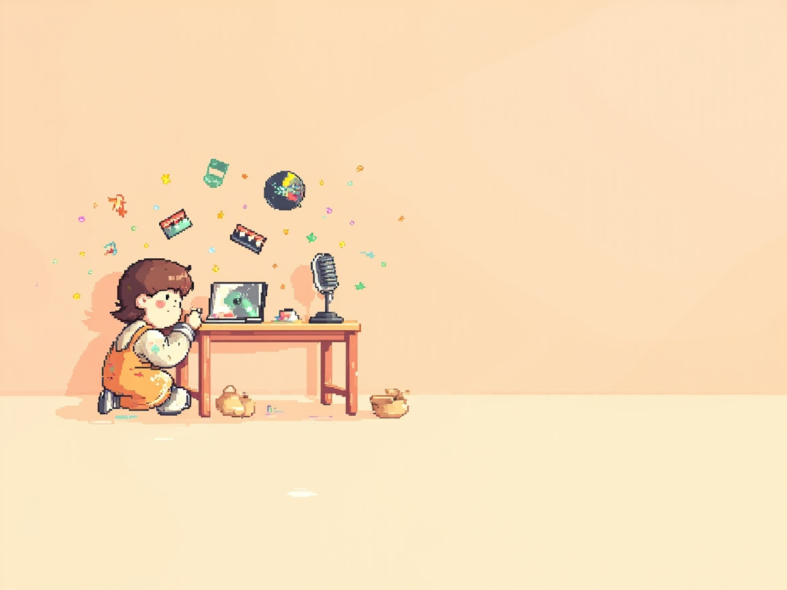
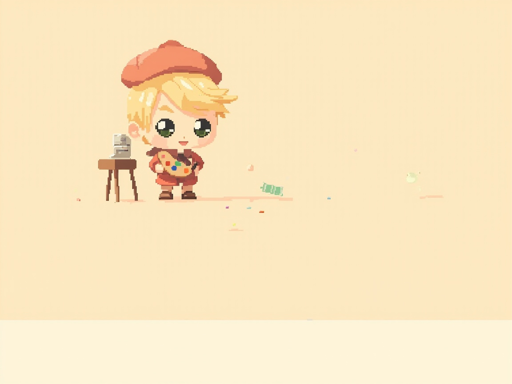
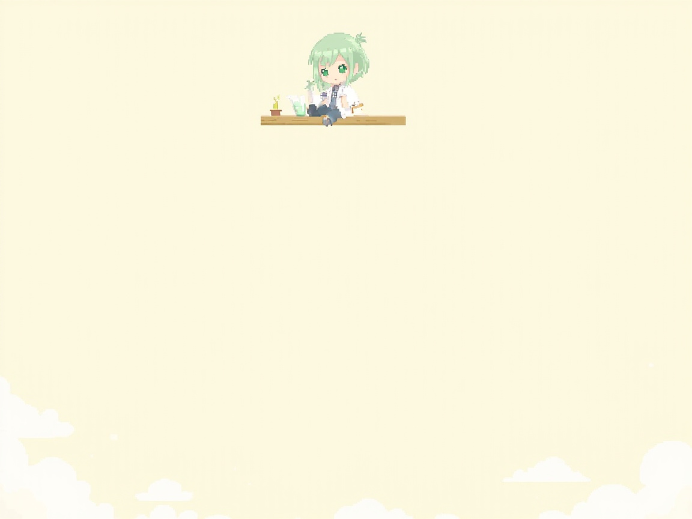
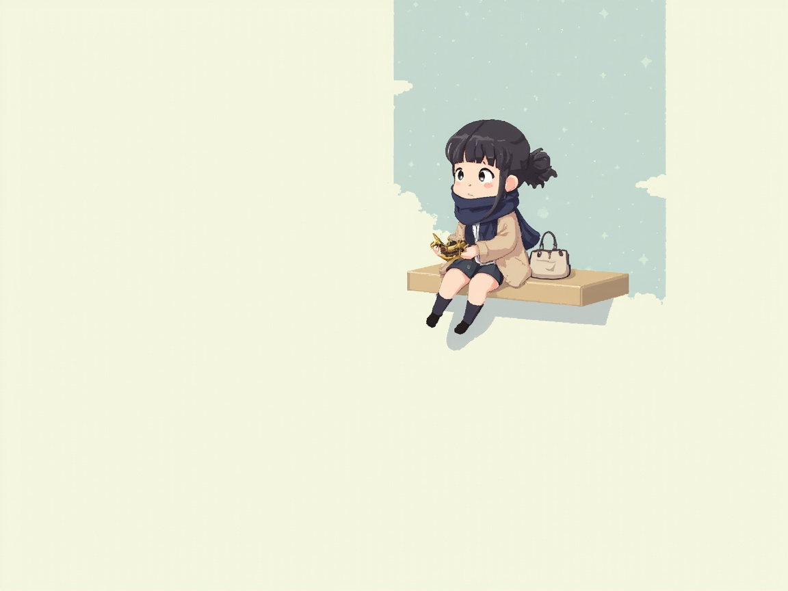
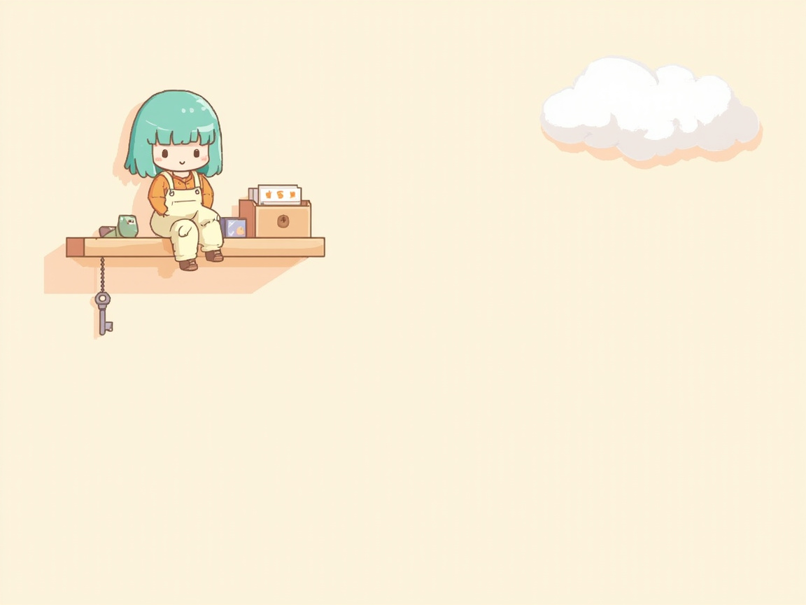
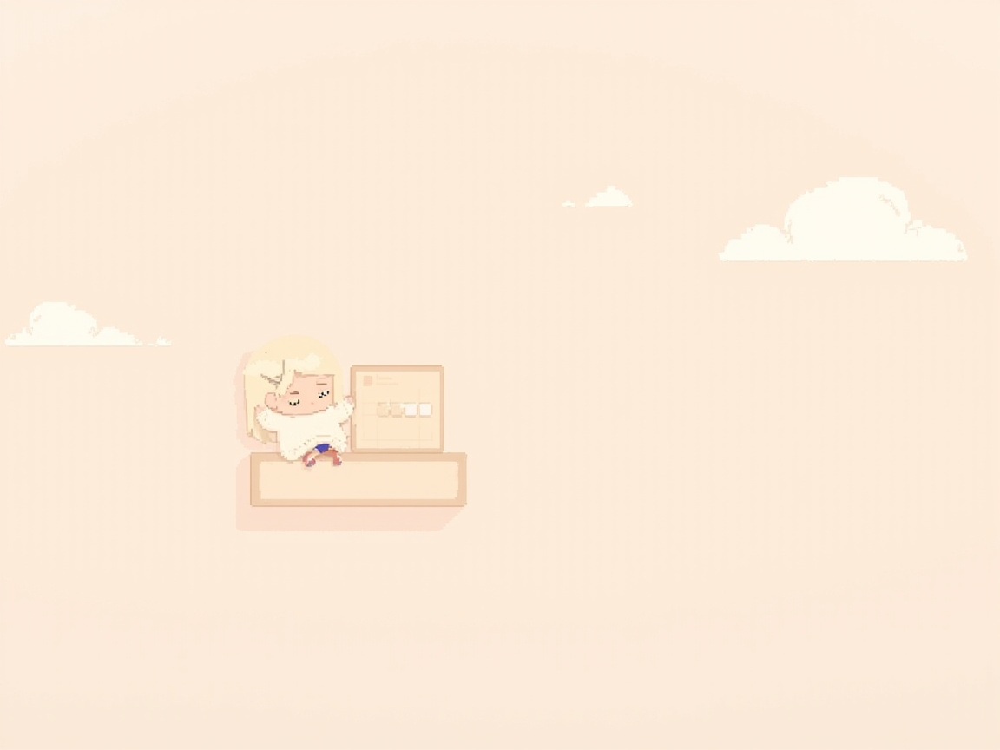
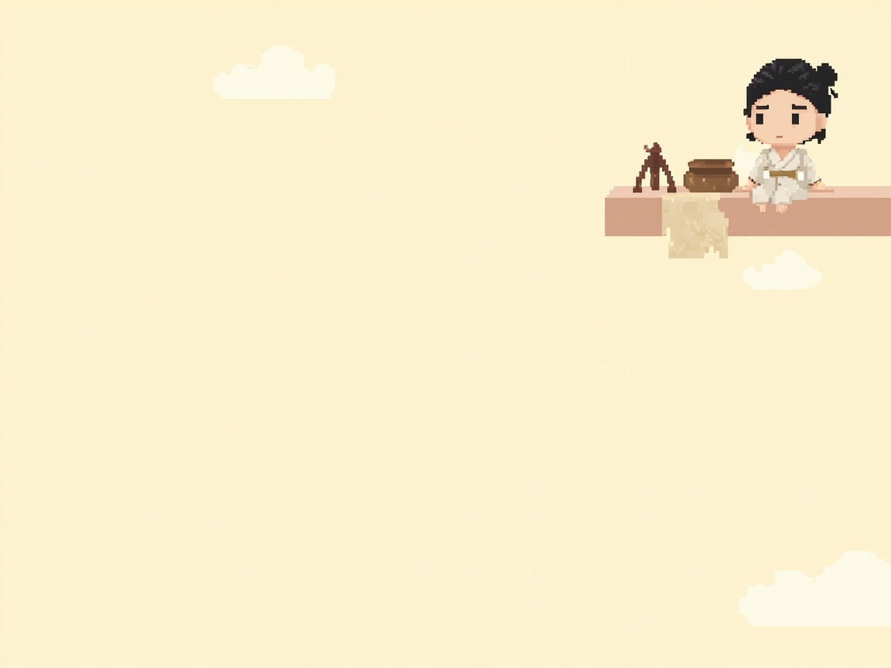

AI 编程工具
ai-coding-tools
Harness 产品夹：Claude Code、Cursor、Codex、Copilot 等工具全家福或开发者工作台。
当前仓内已有（不算 5 张候选）
public/assets/collections/ai-coding-tools.jpg · 配置 cover 已指向此路径Agentic Workflow
agentic-workflow
跨工具方法：Vibe / Spec / Harness，机器人与流水线气氛。
当前仓内已有（不算 5 张候选）

public/assets/collections/agentic-workflow.jpg · 配置 cover 已指向此路径视觉媒体
visual-media
海报、提示词、视频与手绘生成。
当前仓内已有（不算 5 张候选）

public/assets/collections/visual-media.jpg · 配置 cover 已指向此路径模型评测
model-eval
实测、跑分、中转与羊毛场景里的水位判断。
当前仓内已有（不算 5 张候选）

public/assets/collections/model-eval.jpg · 配置 cover 已指向此路径大模型概述
llm-overview
RAG、MoE、应用栈与底层概念。
当前仓内已有（不算 5 张候选）
public/assets/collections/llm-overview.jpg · 配置 cover 已指向此路径AI 早报
ai-morning-brief
按期资讯摘要，报馆/印刷/早报气氛。
当前仓内已有（不算 5 张候选）
public/assets/collections/ai-morning-brief.jpg · 配置 cover 已指向此路径GitHub 每周热点
github-weekly-hot
按期开源项目解读，Octocat / GitHub 工作台。
当前仓内已有（不算 5 张候选）
public/assets/collections/github-weekly-hot.jpg · 配置 cover 已指向此路径课程推荐
courses
训练营与课程拆解，课堂/书架。
当前仓内已有（不算 5 张候选）
public/assets/collections/courses.jpg · 配置 cover 已指向此路径求职攻略
career-guide
校招、社招轮次、转岗与面经。
当前仓内已有（不算 5 张候选）

public/assets/collections/career-guide.jpg · 配置 cover 已指向此路径前端工程
frontend-eng
小程序、Lottie、SVG、CSS、3D 实现向。
当前仓内已有（不算 5 张候选）
public/assets/collections/frontend-eng.jpg · 配置 cover 已指向此路径后端
backend
服务端、接口与业务系统。
当前仓内已有（不算 5 张候选）
public/assets/collections/backend.jpg · 配置 cover 已指向此路径数据库
database
库表、查询与数据系统设计。
当前仓内已有（不算 5 张候选）

public/assets/collections/database.jpg · 配置 cover 已指向此路径运维
ops
Linux、网络、K8s 与术语图解。
当前仓内已有（不算 5 张候选）
public/assets/collections/ops.jpg · 配置 cover 已指向此路径产品经理
product
人效、精益、成本与产品判断。
当前仓内已有（不算 5 张候选）

public/assets/collections/product.jpg · 配置 cover 已指向此路径文史
humanities
历史、神话、人物与地图。
当前仓内已有（不算 5 张候选）

public/assets/collections/humanities.jpg · 配置 cover 已指向此路径本站系列
site-series
园主本站：部署、桌宠、发文流水线。萤火/书桌/写作。
当前仓内已有（不算 5 张候选）
public/assets/collections/site-series.jpg · 配置 cover 已指向此路径